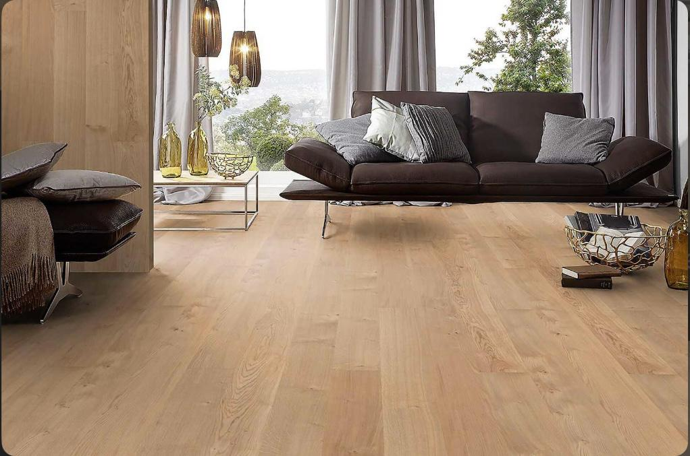
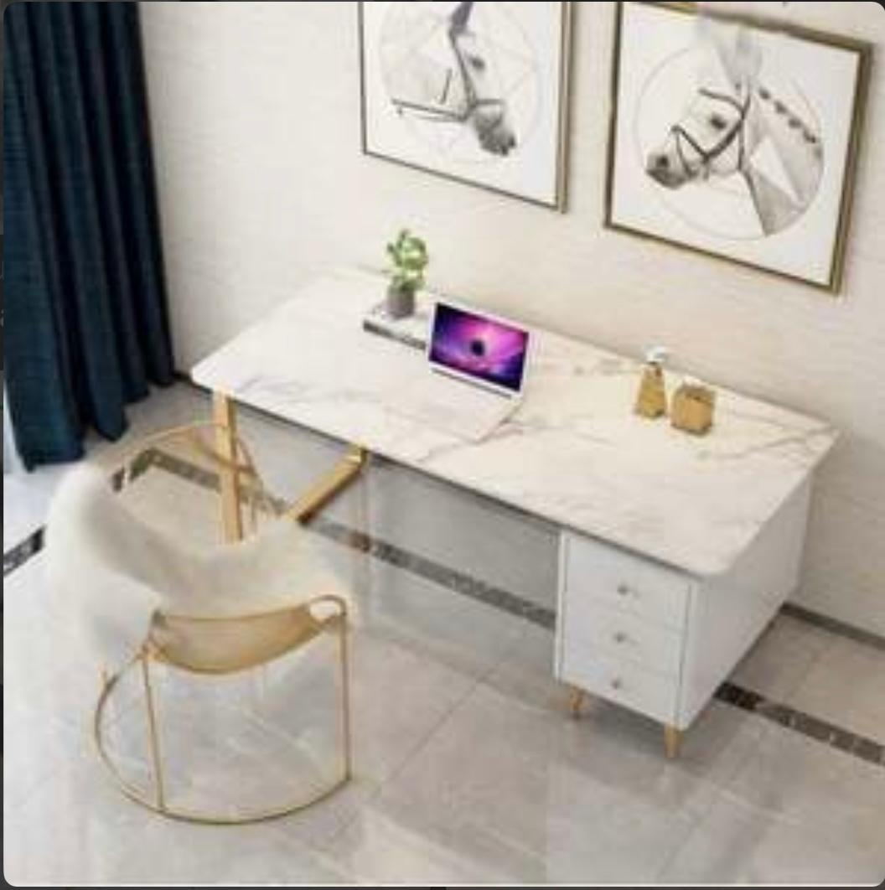
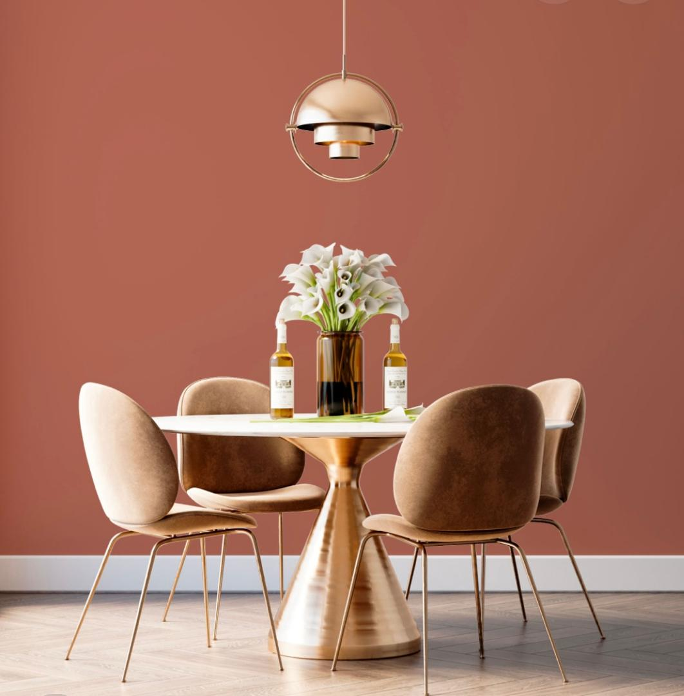

Chêne Clair Naturel
Parquet en bois massif pour une chaleur intemporelle dans votre séjour.
Texture: Lisse
100% Durable
Une sélection rigoureuse de bois, tissus et textures pour transformer vos salons et espaces de travail.

Parquet en bois massif pour une chaleur intemporelle dans votre séjour.

Pour des bureaux de direction alliant prestige et clarté.

Revêtement acoustique et textile pour canapés haut de gamme.